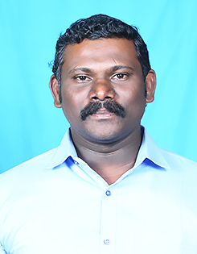
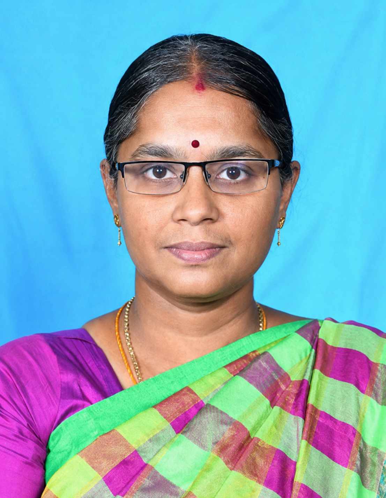
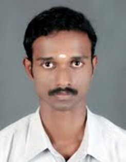

Head of the Department
Dr. R. Shenbagavalli
Associate Professor & Head — Department of Computer Science & Statistics
Dr. R. Shenbagavalli heads the Department of Computer Science with significant expertise in computer science and its applications. She is committed to providing students with the technical skills and practical knowledge required to succeed in the rapidly evolving IT industry.
Under her leadership, the department has fostered a strong culture of innovation, coding, and academic research, with students regularly achieving distinction in university examinations and competitive events.
History of the Department
The Department of Computer Science was established in 2020 as one of the founding departments of Government Arts and Science College, Sankarankovil. Recognising the growing importance of digital literacy, the department was created to bring quality computer science education to students of the Tenkasi district.
Equipped with a modern computer laboratory and a dedicated GUEST LECTURER team, the department has steadily built a reputation for technical excellence and industry-oriented training.
About the Department
The Department of Computer Science offers the B.Sc. Computer Science programme, a three-year undergraduate course affiliated to Manonmaniam Sundaranar University, Tirunelveli. The department is dedicated to producing industry-ready graduates with strong foundations in programming, software development, and emerging technologies.
The curriculum covers programming languages, data structures, algorithms, database management, networking, and software engineering. Students are encouraged to pursue certifications and participate in coding competitions, hackathons, and technical symposiums.
Mission, Vision & Motto
Our Mission
To provide quality computing education, foster innovation and logical reasoning, and equip students with technical skills required for the dynamic IT industry.
Our Vision
To be recognized as a centre of academic excellence in Computer Science, bridging the digital divide for rural talent and building ethical software professionals.
Our Motto
"Code with purpose, innovate with integrity." — We inspire students to harness technology for the betterment of society.
About the Department
The Department of Computer Science offers the B.Sc. Computer Science programme, a three-year undergraduate course affiliated to Manonmaniam Sundaranar University, Tirunelveli. The department is dedicated to producing industry-ready graduates with strong foundations in programming, software development, and emerging technologies.
The curriculum covers programming languages, data structures, algorithms, database management, networking, and software engineering. The department is equipped with a computer laboratory providing hands-on training to all students. Placement support and career counselling are provided to help students secure employment in the IT sector.
Students are encouraged to pursue certifications, participate in hackathons, coding competitions, and technical symposiums. The department regularly organises workshops on industry-relevant topics such as Python, web development, cloud computing, and data analytics.
GUEST LECTURER Members

T. ILAM PARITHI
M.Sc., M.Phil.,
GUEST LECTURER

T. JEYA RAJ
M.Sc., M.Phil.,
GUEST LECTURER
PTA Staff Members

MRS. NITHA
MCA., M.Phil.
PTA STAFF

MR. RAMAR
M.Sc., M.Phil.,
PTA STAFF
Courses Offered
Syllabus
The syllabus for this programme is prescribed by Manonmaniam Sundaranar University, Tirunelveli.
Question Bank Archive
Previous year university question papers and model question banks for all semesters. Use these to prepare effectively for end-semester examinations.
Student Activities
Computer Science students are constantly engaged in technical activities to sharpen their skills:
- Coding Club (CodeCrafters): Peer learning groups focused on competitive programming and algorithms.
- Hackathons: Annual 24-hour coding marathons to build software solutions.
- Tech Symposium: Organizing inter-collegiate technical fests featuring paper presentations and debugging contests.
- Web/App Dev Workshops: Practical sessions from industry experts on modern frameworks.
Achievements
The Department of Computer Science leads in technical achievements across the region:
- Hackathon Winners:Our student teams have consistently placed in the top 3 at state-level hackathons.
- Placements: Graduates Required by
- Research Grants: Faculty members have secured